AXLEHIRE (Now JITSU)
AxleHire's whitelabel last-mile services were projected to grow 8x in volume as we expanded into new regions nationwide. However, the sudden growth was going to cause a huge burden on our internal teams as our Driver App was not equipped to handle the quick increase in volume. The driver app was completely redesigned with efficient workflows incorporating multi-package scanning and failure handling flows to scale reliably to 98.4% on-time delivery across 120k weekly deliveries.
AxleHire (now Jitsu) operates as a last-mile carrier for clients including major retailers and e-commerce platforms. At the growth from 15k to 120k weekly deliveries, a 1% failure rate meant 1,200 failed packages per week — each one a support ticket, a customer complaint, and a potential client penalty.
The existing driver tooling wasn't built for this scale. Drivers were working around the app's limitations daily, creating informal workarounds that introduced inconsistency and made ops oversight nearly impossible.
Driver interviews and ride-alongs revealed that the existing app was being used as a list reference, not an operational tool. Drivers had developed their own systems — sticky notes on dashboards, personal spreadsheets, group chats with dispatchers — to compensate for what the app couldn't do.
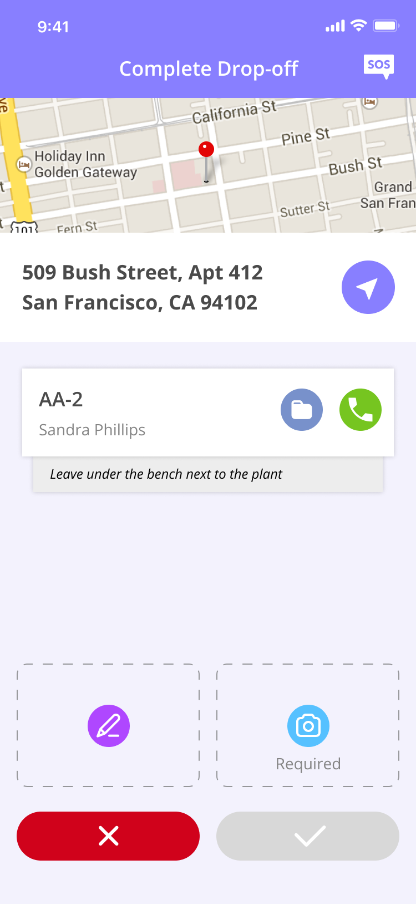
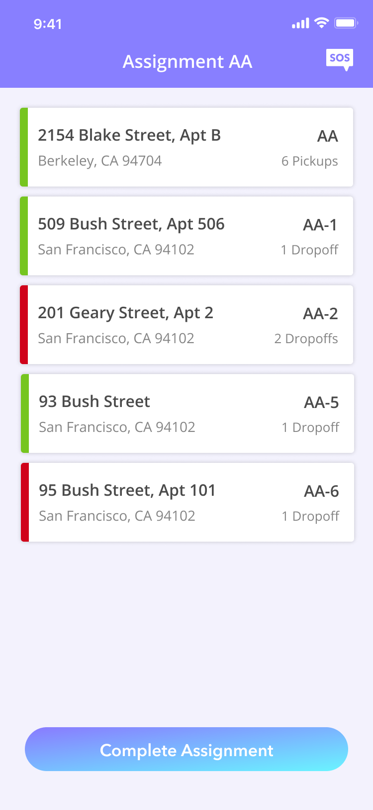
The breakdown wasn't just navigation or a routing volume issue. It was lifecycle clarity. We needed to explicitly map the lifecycle of a delivery with workflows for each state.
This was especially important because the Driver App sat in the middle of a live, multi-spoke ecosystem of products (Warehouse App, Dispatch App, Client App, Routing Algorithm). Every driver action triggered operational consequences elsewhere. This required designing the app as a coordination layer, not as a standalone tool.
Before designing any screens, we mapped the complete delivery lifecycle. This revealed 10 distinct states a package could be in which gave insight into which states had no explicit workflows.
Instead of reacting to errors, I designed predictable workflows for each state. In order to do this, I made sure that each state was created with the following:
The original app accounted for the successful delivery path very clearly. However, failure is not an edge case in last mile logistics. It is an ingrained part of the system. So it was important to create explicit workflows to guide drivers on how they should handle these situations.
All failed deliveries are compiled at the end for reattempts. Instead of failures getting lost in the system, this explicitly allows the driver to readdress failures that happened earlier in their route. This explicit screen seamlessly flows into the delivery pattern for drivers to reattempt the deliveries.
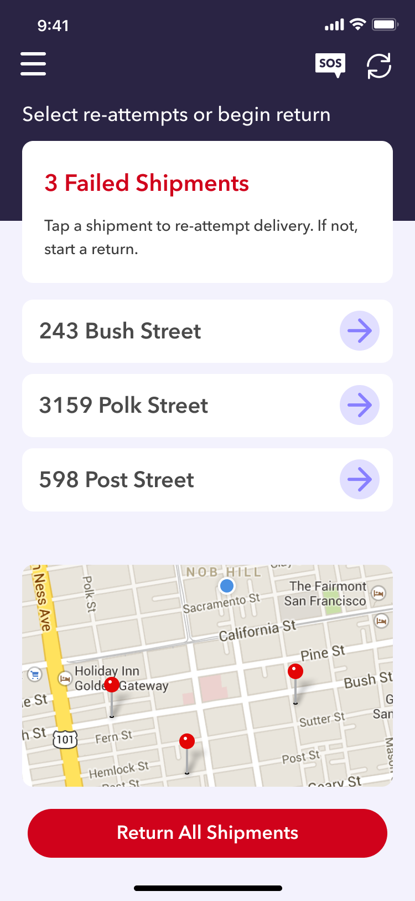
For routes that have failed deliveries even after reattempts, a workflow was explicitly created for these packages to be returned to the warehouse. This ensured that every failed delivery for the day makes it back to the warehouse and reattempted the next day if possible.
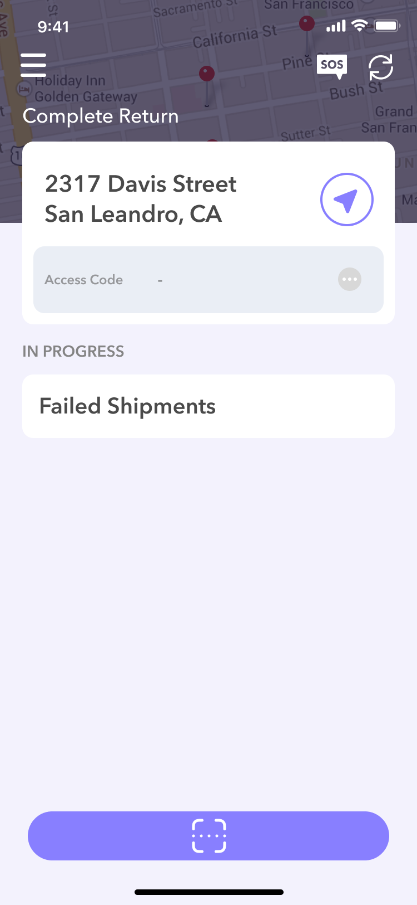
When analyzing the effects of our growth, we identified that inbound processes did not collapse under the weight of increased volume. It was due to the fact that our warehouse app had a scanning device that utilized our label's QR codes. It brought on the idea to use the same uniquely identifiable QR codes for our drivers as well.
Previously, drivers had to manually verify their packages one by one. It was a very taxing process especially at the warehouses where drivers were dealing with an average of 24 packages per delivery route. This was slow and error-prone. It harbored a lot of pit falls where packages were discovered to be missing or damaged too late in the route.
Here you can see the new pick up process in action:
The implementation of scanning moved the burden of manual package verification from the driver to the app. Drivers could rely on the app to confirm the packages in their route and save time. This ensured that most delivery issues were prevented early in the delivery route.
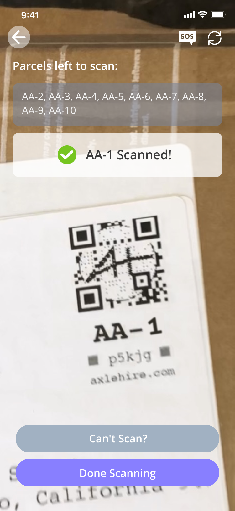
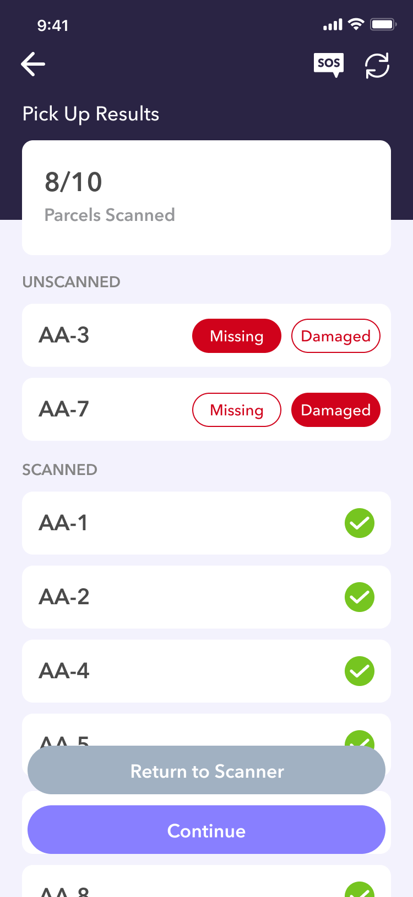
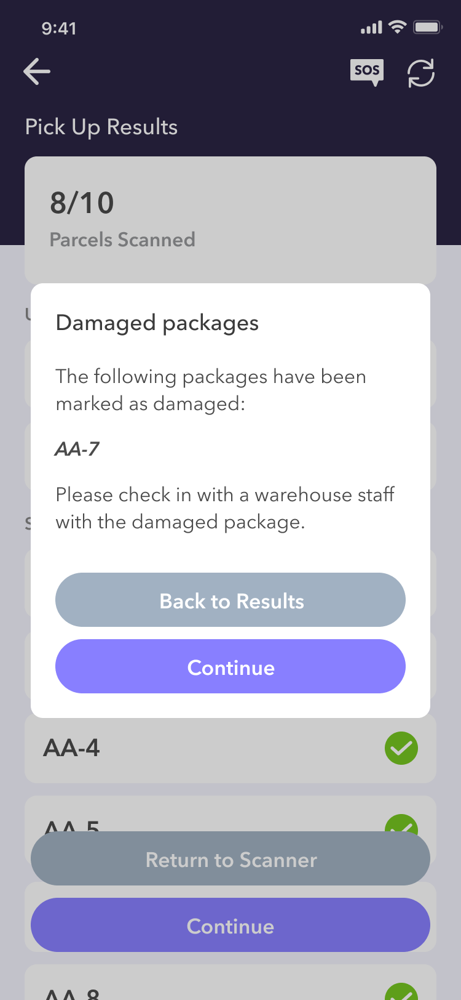
This was a feature that not only completely changed the pickup workflow, but it was a feature that could also be implemented into the entire drop off process. The scanning architecture was implemented into the drop offs to ensure the accuracy of the scaling workflow and business.
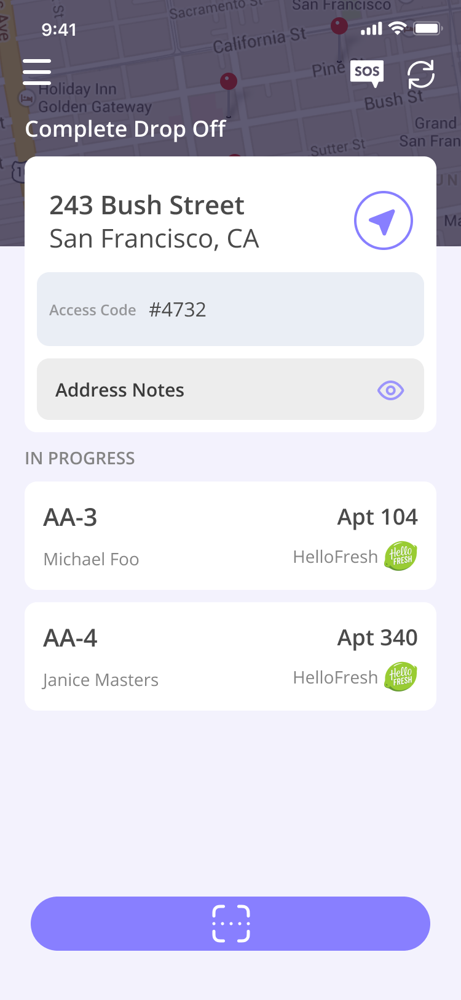
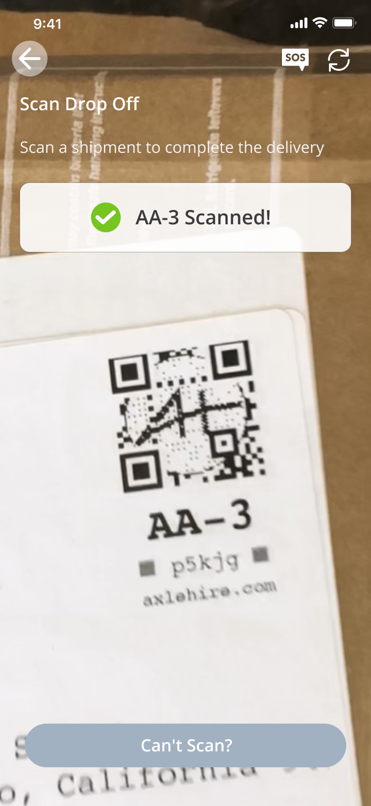
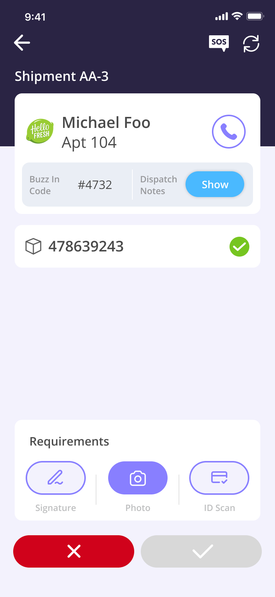
One of AxleHire's selling points was our world class routing algorithm which was able to take into account road closures due to construction or events, traffic patterns, etc. It ingested all of our clients' deliveries for the week and was able to produce any number of the most optimal and efficient routes depending on our fleet manifest.
This however is not emphasized to the drivers. So we observed that a lot of our drivers were completing the delivery route out of order believing that they can complete it faster to take on more delivery routes to earn more.
We created some guardrails to combat this behavior, show the reasoning behind our routes, and ultimately grow trust in our system that we would give them the most optimal route.
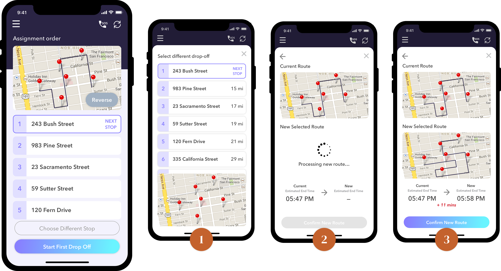
The driver app was the most operationally constrained design project I've worked on. Every interaction had a real-world cost — a second of hesitation at a door, a missed tap in a stop, a wrong status update that became a client escalation. Designing for people who are moving fast, outdoors, under time pressure, with one hand full is a fundamentally different discipline than designing for office software.
The behavioral guardrails section was the most contentious part of the project internally. Operations wanted more guardrails; drivers wanted fewer. The resolution, friction only at failure-prone moments, invisible everywhere else, came directly from ride-alongs, not from a conference room. That's the lesson I carry: the right level of friction can only be calibrated in the field.